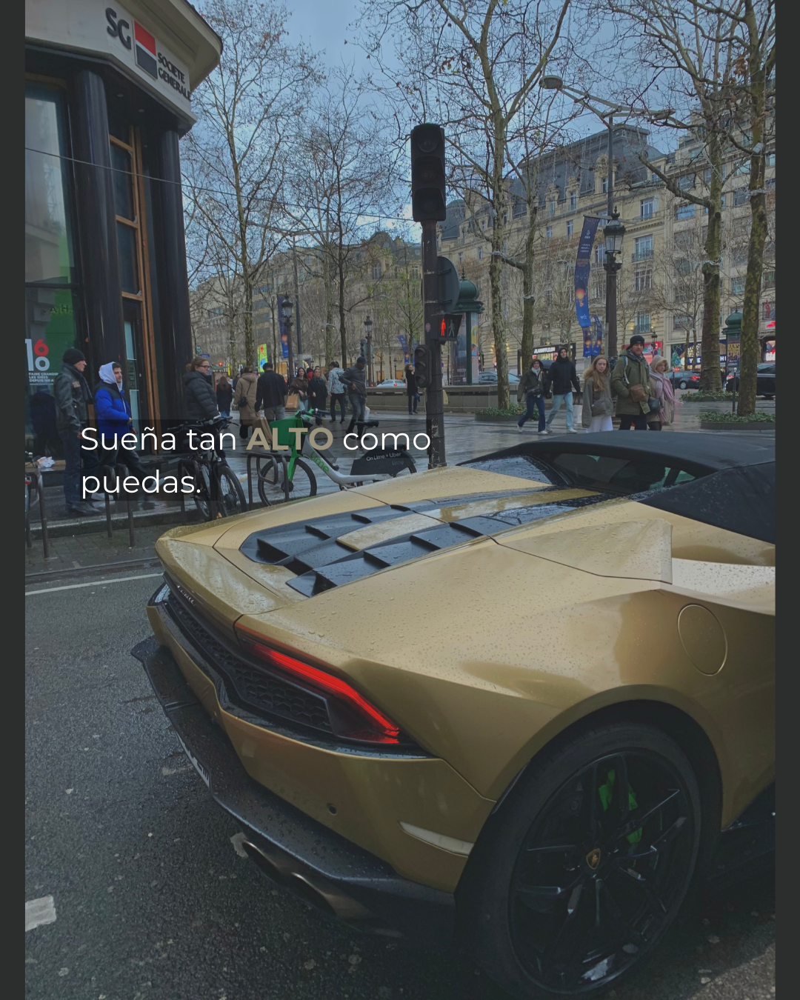
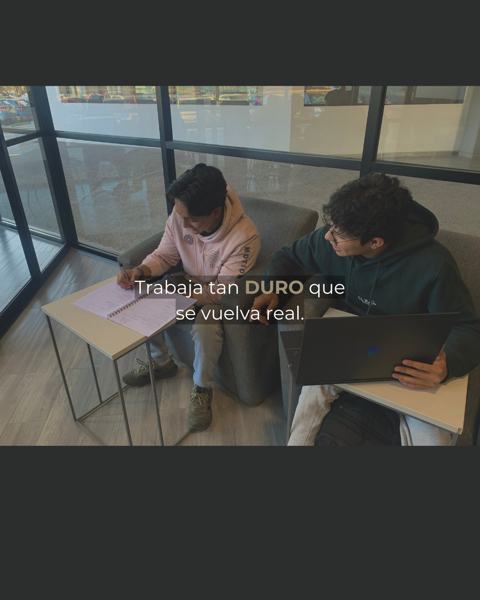
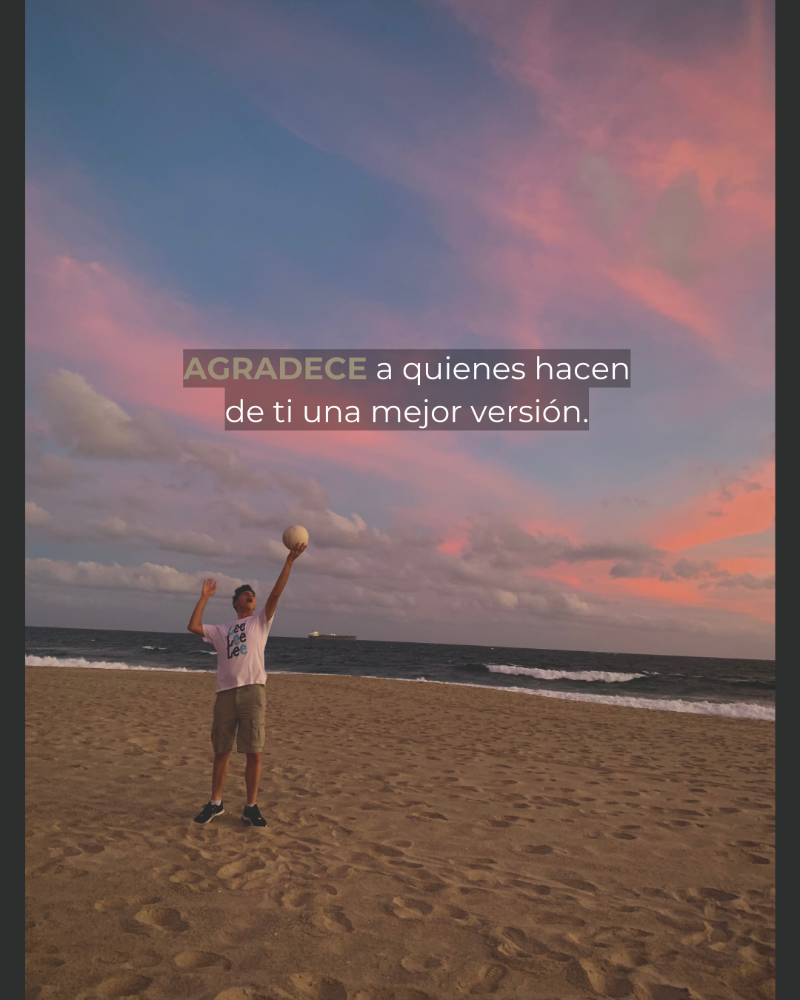

Mi Primer Proyecto Web: El Almacén de Vida
Estado: Terminado y en constante evolución | Tecnologías: HTML, CSS (GitHub Pages)



Video de Demostración del Proyecto
Objetivo del Proyecto
Descripción y Proceso
Objetivo del Proyecto
El propósito principal fue crear una plataforma de marca personal de bajo mantenimiento, alojada completamente gratis en GitHub Pages. El sitio sirve como un centro para líderes y personas que buscan desarrollo, compartiendo mi misión, mis habilidades y mis experiencias de vida.
Retos Superados
- **Estilización:** Aprender y aplicar CSS básico (como la cuadrícula/grid y variables) para lograr una estética profesional y coherente con la paleta de colores deseada.
- **Organización:** Estructurar el contenido en secciones lógicas (Misión, Enfoque, Proyectos, Viajes) para garantizar una navegación intuitiva.
- **Compatibilidad:** Asegurar que todos los elementos (especialmente las imágenes) fueran compatibles con navegadores web, lo que me llevó a trabajar con formatos PNG y JPG.
Resultados y Aprendizajes
Este proyecto me sirvió como un excelente primer paso práctico en desarrollo web. Demuestra mi capacidad para iniciar un proyecto desde cero, definir una visión (mi misión) y ejecutar los aspectos técnicos necesarios para ponerlo en línea y presentarlo de manera profesional.